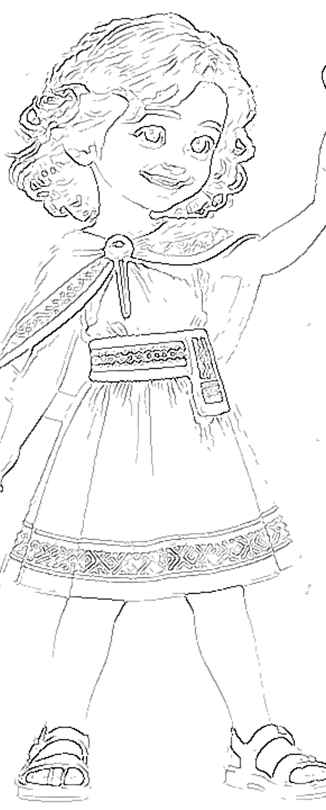

1Las 3 preguntas mágicas
Cuando hay un berrinche, un pleito o lágrimas, espera a que todos estén tranquilos. Luego siéntate a su altura y pregunta, una por una:
¿Qué sentías?
¿Qué estabas haciendo?
¿Por qué?
- Escucha sin corregir. Primero entender, después enseñar.
- Nombra la emoción: "Estabas enojada porque querías tu turno."
- Termina juntos: "¿Qué podemos hacer la próxima vez?"
2Juego: Respira como la llama
Para cuando las emociones están muy grandes. En quechua, hawkay quiere decir calma.
🌸 Huele la florInhala por la nariz, contando hasta 4.
🦙 Aguanta como la llamaQuietitos, contando hasta 2.
🕯️ Sopla la velaExhala despacito por la boca, contando hasta 4.
Háganlo 3 veces juntos. Al final digan: "¡Hawkay!"
3Palabras en quechua para usar en casa
| Kuska | Juntos. "¡Lo hacemos kuska!" |
| Hawkay | Calma, tranquilo. |
| Tupananchiskama | Hasta que nos volvamos a encontrar. Para despedirse con cariño. |
| Maki | Mano. "Dame tu maki." |
| Taki | Canción. |
| T'ika | Flor. |
4Hoja para colorear: Melody
Imprime esta página y deja que tus hijos le pongan sus colores favoritos.
